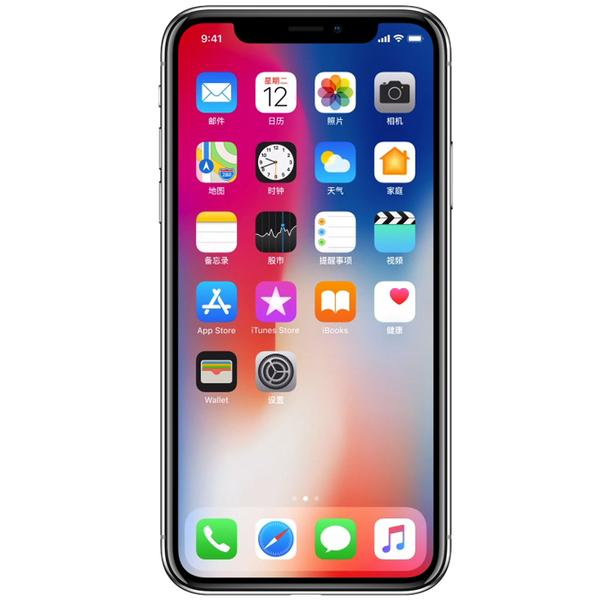
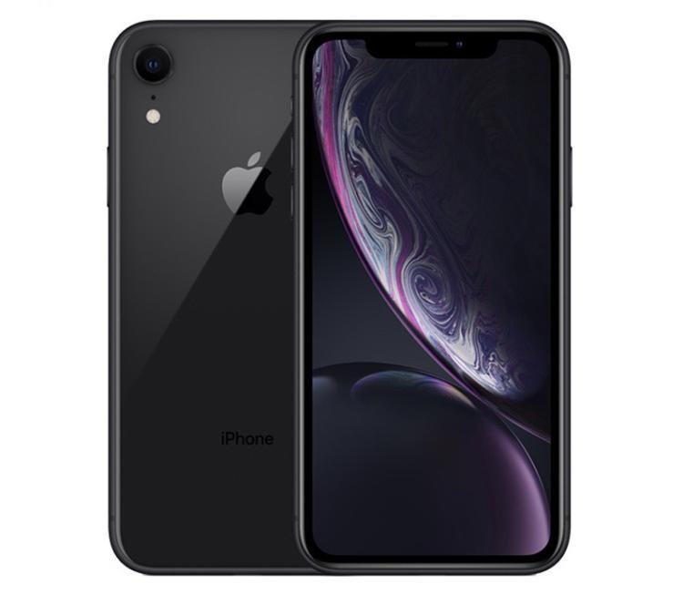
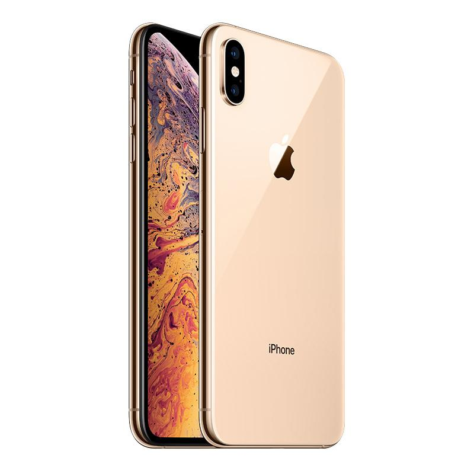

IPhone x is a high-end model, with a new design, a sharp color OLED screen and an upgraded camera. It can use 3D facial recognition for the first time and support airpower. Divided into two versions, 64GB and 256GB, the price of Chinese mainland is 8388 yuan, and the United States starts selling at 999 US dollars. It was sold in advance in October 27, 2017 and sold on November 3rd. 
IPhone XR is a smart phone owned by apple in the United States. It is equipped with A12 bionic chip with 7Nm technology, adopts truedepth camera and supports face ID function. In the early morning of September 13, 2018, the iPhone XR was officially launched at Apple's autumn new product launch in 2018, starting at $749. It is officially on sale at 3:01 on October 19, 2018. IPhone XR, which is available in three regions of mainland China, Hongkong and Macao, China China, supports dual nano-SIM entity cards. The XR, which is available in other regions, uses a nano SIM card and an e-sim card. 
IPhone XS is a smart phone device owned by apple in the United States. It is equipped with a 5.8-inch OLED screen, with a resolution of 2436 * 1125, 458ppi and a maximum capacity of 512gb. In the early morning of September 13, 2018, the iPhone XS was officially launched at Apple's new product launch in the autumn of 2018; the iPhone XS max with dual SIM cards was specially launched in China, and ESIM cards were used in other regions. On September 14, 2018, iPhone XS will be pre purchased, and will be put on sale on September 21, 2018. Starting from 8699 yuan, you can choose silver, dark grey and gold. 